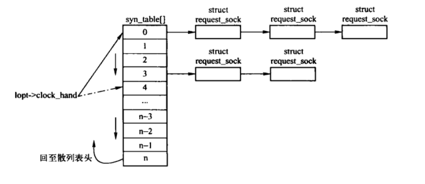
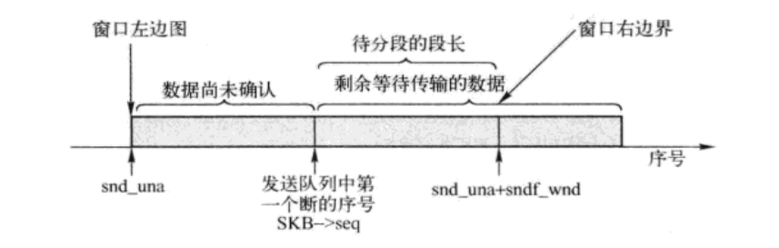

TCP定时器
Table of Contents
TCP为每条连接建立七个定时器，分别是： 连接建立定时器、重传定时器、延时ACK定时器、持续定时器、保活定时器、FIN_WAIT_2定时器和TIME_WAIT定时器。 实际上内核为了提高效率，只使用了四个定时器来完成七个定时器的功能。 FIN_WAIT_2和TIME_WAIT定时器比较特殊，当sock状态是FIN_WAIT_2和TIME_WAIT时，tcp_sock会转变为inet_timewait_sock，定时器也会由 inet_timewait_sock 来管理。
1 初始化
在创建套接口、传输控制块时，会调用tcp_init_xmit_timers()函数，进而调用 inet_csk_inet_xxmit_timers() 进行具体的初始化，主要是初始化 inet_connection_sock 结构中的 icsk_retransmit_timer 和 icsk_delack_timer，以及sock结构中的sk_timer定时器。
/* * Using different timers for retransmit, delayed acks and probes * We may wish use just one timer maintaining a list of expire jiffies * to optimize. */ void inet_csk_init_xmit_timers(struct sock *sk, void (*retransmit_handler)(unsigned long), void (*delack_handler)(unsigned long), void (*keepalive_handler)(unsigned long)) { struct inet_connection_sock *icsk = inet_csk(sk); //初始化定时器 init_timer(&icsk->icsk_retransmit_timer); init_timer(&icsk->icsk_delack_timer); init_timer(&sk->sk_timer); //初始化定时器的处理函数 icsk->icsk_retransmit_timer.function = retransmit_handler; icsk->icsk_delack_timer.function = delack_handler; sk->sk_timer.function = keepalive_handler; //初始化定时器处理函数的参数 icsk->icsk_retransmit_timer.data = icsk->icsk_delack_timer.data = sk->sk_timer.data = (unsigned long)sk; //初始化延时确认模式 icsk->icsk_pending = icsk->icsk_ack.pending = 0; }
2 连接建立定时器
连接建立定时器用于被动建立连接时，在发送SYN+ACK之后启动定时器。
连接建立定时器的处理函数会删除那些由于尝试连接次数达到上限后还未建立连接的传输控制块，上限有 inet_connection_sock 结构的 icsk_syn_retries 给出。通常情况下，会为新的半连接状态的传输控制块预留一半的空间，如果连接过程时间较长还未完成连接的套接口影响到建立新链接时，就会即使将其终止并删除。
2.1 连接建立定时器处理函数
2.1.1 tcp_keepalive_timer()
tcp_keepalive_timer() 实现了TCP中的三个定时器：连接建立定时器、保活定时器和FIN_WAIT_2定时器。这是由于这三个定时器分别处于 LISTEN、ESTABLISHED和FIN_WAIT_2三种状态，因此只需要通过当前TCP状态就能判断当前是何种定时器。
一下只关心连接建立定时器部分。
static void tcp_keepalive_timer (unsigned long data/*定时器对应的传输控制块*/) { struct sock *sk = (struct sock *) data; struct inet_connection_sock *icsk = inet_csk(sk); struct tcp_sock *tp = tcp_sk(sk); __u32 elapsed; /* Only process if socket is not in use. */ bh_lock_sock(sk); if (sock_owned_by_user(sk)) { //被用户进程锁定，则0.05s后再次激活 /* Try again later. */ inet_csk_reset_keepalive_timer (sk, HZ/20); goto out; } //LISTEN状态则是连接建立定时器 if (sk->sk_state == TCP_LISTEN) { tcp_synack_timer(sk); //实际的处理逻辑 goto out; } //...... }
2.1.2 tcp_synack_timer()
该函数调用 inet_csk_reqsk_queue_prune()，用来扫描半连接散列表。然后再设定建立连接定时器，间隔时间为 TCP_SYNQ_INTERVAL。
2.1.3 inet_csk_reqsk_queue_prune()
该函数扫描半连接散列表，当半连接队列的连接请求块个数超过最大个数的一半时，需要为接收没有重传过的连接保留一半的空间。半连接队列里面要尽量保持没有重传过的连接，并删除一些长时间空闲或没有接收的连接。
半连接散列表轮询方式如下图：

Figure 1: 半连接散列表轮询方式
void inet_csk_reqsk_queue_prune(struct sock *parent, //进行监听的传输控制块 const unsigned long interval, //建立连接定时器的超时时间 const unsigned long timeout, //往返超时的初始值。每次超时都加倍上次的超时时间 const unsigned long max_rto) //往返时间的最大值 { struct inet_connection_sock *icsk = inet_csk(parent); struct request_sock_queue *queue = &icsk->icsk_accept_queue; struct listen_sock *lopt = queue->listen_opt; //获取建立TCP连接时，允许重传SYN+ACK的最大次数 int max_retries = icsk->icsk_syn_retries ? : sysctl_tcp_synack_retries; int thresh = max_retries; unsigned long now = jiffies; struct request_sock **reqp, *req; int i, budget; //该套接口中保存连接请求块的散列表还未建立，或者还没有处于连接过程的连接请求块，直接返回 if (lopt == NULL || lopt->qlen == 0) return; /* Normally all the openreqs are young and become mature * (i.e. converted to established socket) for first timeout. * If synack was not acknowledged for 3 seconds, it means * one of the following things: synack was lost, ack was lost, * rtt is high or nobody planned to ack (i.e. synflood). * When server is a bit loaded, queue is populated with old * open requests, reducing effective size of queue. * When server is well loaded, queue size reduces to zero * after several minutes of work. It is not synflood, * it is normal operation. The solution is pruning * too old entries overriding normal timeout, when * situation becomes dangerous. * * Essentially, we reserve half of room for young * embrions; and abort old ones without pity, if old * ones are about to clog our table. */ //qlen超过最大半连接数的一半 if (lopt->qlen>>(lopt->max_qlen_log-1)) { //没有重传过SYN+ACK的连接请求块数量的一半 int young = (lopt->qlen_young<<1); while (thresh > 2) { //尝试次数大于2 if (lopt->qlen < young) break; thresh--; //调整阈值 young <<= 1; //再次减半 } } //在启用加速连接时， 获取最多允许重传SYN段的次数 if (queue->rskq_defer_accept) max_retries = queue->rskq_defer_accept; /*计算需要检测的半连接队列的个数，得到预计值， 由于半连接队列是个链表，数量可能较大，所以每次只是遍历几个链表 */ budget = 2 * (lopt->nr_table_entries / (timeout / interval)); //clock_hand初始值为0,每次遍历完半连接队列，吧最后的i保存到clock_hand中，下次从clock_hand开始 i = lopt->clock_hand; do { reqp=&lopt->syn_table[i]; //获取当前处理入口的链表头 while ((req = *reqp) != NULL) { //遍历链表 //如果已经超时，则判断重传次数 if (time_after_eq(now, req->expires)) { if ((req->retrans < thresh || //SYN+ACK段重传次数未到上限 //已经接收到第三次握手的ACK段后，由于繁忙未能建立连接 (inet_rsk(req)->acked && req->retrans < max_retries)) && !req->rsk_ops->rtx_syn_ack(parent, req, NULL)) { unsigned long timeo; //累计重传次数，如果是首次则需要递减 young if (req->retrans++ == 0) lopt->qlen_young--; timeo = min((timeout << req->retrans), max_rto); req->expires = now + timeo; reqp = &req->dl_next; continue; } //重传次数超过限制，则取消该连接请求。 /* Drop this request */ inet_csk_reqsk_queue_unlink(parent, req, reqp); reqsk_queue_removed(queue, req); reqsk_free(req); continue; } reqp = &req->dl_next; //取链表中的下个连接请求块 } //取下一个入口链表 i = (i + 1) & (lopt->nr_table_entries - 1); } while (--budget > 0); //保存当前处理入口 lopt->clock_hand = i; //连接请求散列表还有未完成连接的请求块，再次启动定时器 if (lopt->qlen) inet_csk_reset_keepalive_timer(parent, interval); }
2.2 连接建立定时器的激活
在服务端，当监听套接字接收了一个新的连接请求后，会为该连接请求创建请求块，并将其添加到父传输控制块的连接请求散列表中，最后启动连接建立定时器。
3 重传定时器
3.1 重传定时器处理函数
3.1.1 tcp_write_timer()
TCP在发送数据时设置重传定时器，如果超时还未确认，则TCP重传数据。重传定时器的超时时间是动态计算的，取决于TCP为该连接测量的往返时间以及该段已经被重传的次数。
static void tcp_write_timer(unsigned long data) { struct sock *sk = (struct sock*)data; struct inet_connection_sock *icsk = inet_csk(sk); int event; bh_lock_sock(sk); if (sock_owned_by_user(sk)) { //传输控制块被用户锁定，0.05s后再次重试 /* Try again later */ sk_reset_timer(sk, &icsk->icsk_retransmit_timer, jiffies + (HZ / 20)); goto out_unlock; } //TCP状态为CLOSE或者没有定时器事件 if (sk->sk_state == TCP_CLOSE || !icsk->icsk_pending) goto out; //定时器还未到期，重新设置定时器超时 if (time_after(icsk->icsk_timeout, jiffies)) { sk_reset_timer(sk, &icsk->icsk_retransmit_timer, icsk->icsk_timeout); goto out; } //已经过期 event = icsk->icsk_pending; icsk->icsk_pending = 0; //根据定时器事件区分是什么定时器（重传定时器和持续定时器共用用一个定时器） switch (event) { case ICSK_TIME_RETRANS: //重传定时器处理 tcp_retransmit_timer(sk); break; case ICSK_TIME_PROBE0: //持续定时器处理 tcp_probe_timer(sk); break; } TCP_CHECK_TIMER(sk); out: sk_stream_mem_reclaim(sk); out_unlock: bh_unlock_sock(sk); sock_put(sk); }
3.1.2 tcp_retransmit_timer
该函数实现实际的重传逻辑。
static void tcp_retransmit_timer(struct sock *sk) { struct tcp_sock *tp = tcp_sk(sk); struct inet_connection_sock *icsk = inet_csk(sk); //所有数据包都被确认，则无需处理 if (!tp->packets_out) goto out; BUG_TRAP(!skb_queue_empty(&sk->sk_write_queue)); //发送窗口关闭 && 套接口处于SOCK_DEAD状态 && 不处于连接过程中 if (!tp->snd_wnd && !sock_flag(sk, SOCK_DEAD) && !((1 << sk->sk_state) & (TCPF_SYN_SENT | TCPF_SYN_RECV))) { /* Receiver dastardly shrinks window. Our retransmits * become zero probes, but we should not timeout this * connection. If the socket is an orphan, time it out, * we cannot allow such beasts to hang infinitely. */ #ifdef TCP_DEBUG if (net_ratelimit()) { struct inet_sock *inet = inet_sk(sk); printk(KERN_DEBUG "TCP: Treason uncloaked! Peer %u.%u.%u.%u:%u/%u shrinks window %u:%u. Repaired.\n", NIPQUAD(inet->daddr), ntohs(inet->dport), inet->num, tp->snd_una, tp->snd_nxt); } #endif //超过重传超时的上限，则认为出错 if (tcp_time_stamp - tp->rcv_tstamp > TCP_RTO_MAX) { tcp_write_err(sk); //报告错误，并关闭套接口 goto out; } //进入拥塞控制的LOSS状态 tcp_enter_loss(sk, 0); //重传队列中的第一个段 tcp_retransmit_skb(sk, skb_peek(&sk->sk_write_queue)); //由于发生重传，需要更新目的路由缓存 __sk_dst_reset(sk); goto out_reset_timer; } /* 发生重传后，需要检测当前资源使用情况和重传的次数，如果次数达到上限则报告错误 并关闭套接口。如果使用资源达到上限，则不进行此次重传 */ if (tcp_write_timeout(sk)) goto out; //重传次数为0, 说明刚刚进入重传阶段，根据不同的拥塞控制状态进行处理 if (icsk->icsk_retransmits == 0) { if (icsk->icsk_ca_state == TCP_CA_Disorder || icsk->icsk_ca_state == TCP_CA_Recovery) { if (tp->rx_opt.sack_ok) { if (icsk->icsk_ca_state == TCP_CA_Recovery) NET_INC_STATS_BH(LINUX_MIB_TCPSACKRECOVERYFAIL); else NET_INC_STATS_BH(LINUX_MIB_TCPSACKFAILURES); } else { if (icsk->icsk_ca_state == TCP_CA_Recovery) NET_INC_STATS_BH(LINUX_MIB_TCPRENORECOVERYFAIL); else NET_INC_STATS_BH(LINUX_MIB_TCPRENOFAILURES); } } else if (icsk->icsk_ca_state == TCP_CA_Loss) { NET_INC_STATS_BH(LINUX_MIB_TCPLOSSFAILURES); } else { NET_INC_STATS_BH(LINUX_MIB_TCPTIMEOUTS); } } if (tcp_use_frto(sk)) { //可以使用F-RTO算法处理 tcp_enter_frto(sk); } else {//进入常规的RTO慢启动重传恢复阶段 tcp_enter_loss(sk, 0); } //如果重传队列上的第一个SKB失败，则需要复位重传定时器，等待下次重传 if (tcp_retransmit_skb(sk, skb_peek(&sk->sk_write_queue)) > 0) { /* Retransmission failed because of local congestion, * do not backoff. */ if (!icsk->icsk_retransmits) icsk->icsk_retransmits = 1; inet_csk_reset_xmit_timer(sk, ICSK_TIME_RETRANS, min(icsk->icsk_rto, TCP_RESOURCE_PROBE_INTERVAL), TCP_RTO_MAX); goto out; } /* Increase the timeout each time we retransmit. Note that * we do not increase the rtt estimate. rto is initialized * from rtt, but increases here. Jacobson (SIGCOMM 88) suggests * that doubling rto each time is the least we can get away with. * In KA9Q, Karn uses this for the first few times, and then * goes to quadratic. netBSD doubles, but only goes up to *64, * and clamps at 1 to 64 sec afterwards. Note that 120 sec is * defined in the protocol as the maximum possible RTT. I guess * we'll have to use something other than TCP to talk to the * University of Mars. * * PAWS allows us longer timeouts and large windows, so once * implemented ftp to mars will work nicely. We will have to fix * the 120 second clamps though! */ //发送成功后，递增指数退避算法指数 icsk->icsk_backoff++; icsk->icsk_retransmits++; //递增累计重传次数 out_reset_timer: //重设重传超时时间，并复位定时器 icsk->icsk_rto = min(icsk->icsk_rto << 1, TCP_RTO_MAX); inet_csk_reset_xmit_timer(sk, ICSK_TIME_RETRANS, icsk->icsk_rto, TCP_RTO_MAX); if (icsk->icsk_retransmits > sysctl_tcp_retries1) __sk_dst_reset(sk); out:; }
3.1.3 tcp_write_timeout()
发生重传后，需要检测当前的资源使用情况。
/* A write timeout has occurred. Process the after effects. */ static int tcp_write_timeout(struct sock *sk) { struct inet_connection_sock *icsk = inet_csk(sk); struct tcp_sock *tp = tcp_sk(sk); int retry_until; int mss; //如果是建立连接阶段超时，则需要检测使用的路由缓存项，并获取重试次数的最大值 if ((1 << sk->sk_state) & (TCPF_SYN_SENT | TCPF_SYN_RECV)) { if (icsk->icsk_retransmits) dst_negative_advice(&sk->sk_dst_cache); retry_until = icsk->icsk_syn_retries ? : sysctl_tcp_syn_retries; } else { //重传次数达到 tcp_retries1 ,则进行黑洞检测 if (icsk->icsk_retransmits >= sysctl_tcp_retries1) { /* Black hole detection */ if (sysctl_tcp_mtu_probing) { if (!icsk->icsk_mtup.enabled) {//如果没有开启路径MTU发现 icsk->icsk_mtup.enabled = 1; //开启路径MTU发现 tcp_sync_mss(sk, icsk->icsk_pmtu_cookie); //根据PMTU同步MSS } else { //将当前路径MTU发现区间左端点的一半作为新区间左端点 mss = min(sysctl_tcp_base_mss, tcp_mtu_to_mss(sk, icsk->icsk_mtup.search_low)/2); mss = max(mss, 68 - tp->tcp_header_len); //重新设定MTU发现区间。 icsk->icsk_mtup.search_low = tcp_mss_to_mtu(sk, mss); tcp_sync_mss(sk, icsk->icsk_pmtu_cookie); //根据PMTU同步mss } } //检测使用的路由缓存项 dst_negative_advice(&sk->sk_dst_cache); } retry_until = sysctl_tcp_retries2; /* 当前套接口连接已经断开并即将关闭，则需要检测当前使用的资源。（tcp_out_of_resources） 如果当前的孤儿套接口数量达到tcp_max_orphans 或者当前已经使用的内存达到硬性限制， 则立即关闭套接口 （虽然不符合TCP规范，但是为防止Dos攻击，必须关闭） */ if (sock_flag(sk, SOCK_DEAD)) { const int alive = (icsk->icsk_rto < TCP_RTO_MAX); retry_until = tcp_orphan_retries(sk, alive); if (tcp_out_of_resources(sk, alive || icsk->icsk_retransmits < retry_until)) return 1; } } //重传次数达到限制 （建立连接重传限制，超时重传限制，确认连接异常期间重试的限制），则关闭 if (icsk->icsk_retransmits >= retry_until) { /* Has it gone just too far? */ tcp_write_err(sk); //上报错误 return 1; } return 0; }
3.2 重传定时器的激活
重传定时器一般在一下情况会被激活：
- 发送一个正常的段之前，不存在未确认的段，则发出段之后激活，之后如果收到ACK，且发送的所有段都已经被确认，则关闭定时器，否则重设定时器。
- 客户端连续发送SYN段后。
- 路径MTU探测失败后。
- 接收方丢弃SACK部分接收的段。
重传定时器通过 ICSK_TIME_RETRANS 标志调用 inet_csk_reset_xmit_timer() 来启动： inet_csk_reset_xmit_timer(sk, ICSK_TIME_RETRANS, inet_csk(sk)->icsk_rto, TCP_RTO_MAX);
4 延时确认定时器
4.1 延时确认定时器的处理函数
“延时ACK定时器”在TCP收到必须被确认但又无需马上发出确认的段时设定，TCP在200ms后发送确认响应，如果200ms内，有数据要在连接上发送，则延时ACK可以随数据一起发送，称之为 捎带确认。
static void tcp_delack_timer(unsigned long data) { struct sock *sk = (struct sock*)data; struct tcp_sock *tp = tcp_sk(sk); struct inet_connection_sock *icsk = inet_csk(sk); bh_lock_sock(sk); if (sock_owned_by_user(sk)) { //传输控制块被用户锁定 /* Try again later. */ icsk->icsk_ack.blocked = 1; //设置blocked标志 NET_INC_STATS_BH(LINUX_MIB_DELAYEDACKLOCKED); //重设定时器超时时间 sk_reset_timer(sk, &icsk->icsk_delack_timer, jiffies + TCP_DELACK_MIN); goto out_unlock; } //回收缓存 sk_stream_mem_reclaim(sk); //TCP状态为CLOSE,或者没有启动 延时发送ACK定时器 ，则无需处理 if (sk->sk_state == TCP_CLOSE || !(icsk->icsk_ack.pending & ICSK_ACK_TIMER)) goto out; //还没有超时，则复位定时器 if (time_after(icsk->icsk_ack.timeout, jiffies)) { sk_reset_timer(sk, &icsk->icsk_delack_timer, icsk->icsk_ack.timeout); goto out; } //进入延时ACK处理前，需要去掉ICSK_ACK_TIMER标志 icsk->icsk_ack.pending &= ~ICSK_ACK_TIMER; //ucopy控制块中的prequeue队列不为空，则通过sk_backlog_rcv函数处理sk_backlog_rcv队列的SKB if (!skb_queue_empty(&tp->ucopy.prequeue)) { struct sk_buff *skb; NET_INC_STATS_BH(LINUX_MIB_TCPSCHEDULERFAILED); while ((skb = __skb_dequeue(&tp->ucopy.prequeue)) != NULL) sk->sk_backlog_rcv(sk, skb); //tcp_v4_do_rcv() tp->ucopy.memory = 0; } //此时有ACK需要发送，则通过tcp_send_ack()发送 if (inet_csk_ack_scheduled(sk)) { if (!icsk->icsk_ack.pingpong) { /* Delayed ACK missed: inflate ATO. */ icsk->icsk_ack.ato = min(icsk->icsk_ack.ato << 1, icsk->icsk_rto); } else {//需要离开pingpong模式 /* Delayed ACK missed: leave pingpong mode and * deflate ATO. */ icsk->icsk_ack.pingpong = 0; icsk->icsk_ack.ato = TCP_ATO_MIN; } tcp_send_ack(sk); NET_INC_STATS_BH(LINUX_MIB_DELAYEDACKS); } TCP_CHECK_TIMER(sk); out: if (tcp_memory_pressure) sk_stream_mem_reclaim(sk); out_unlock: bh_unlock_sock(sk); sock_put(sk); }
4.2 延时确认定时器的激活
延时确认定时器一般在以下情况被激活：
- 在建立连接时，客户端第三次握手可能会被延时确认，如有数据需要输出、设置了TCP_DEFER_ACCEPT选项或者不再快速确认模式。
- 在确定立即发送ACK时，如果分配内存失败，则会进行延时确认。
- 未启用tcp_low_latency情况下，当有正在读取TCP流的进程时，此时prequeue队列存在TCP段且消耗的内存尚未达到上限，且没有ACK需要发送。
延时确认定时器通过以 ICSK_TIME_DACK 标志调用 inet_csk_reset_xmit_timer() 函数来启动： inet_csk_reset_xmit_timer(sk, ICSK_TIME_DACK, TCP_DELACK_MAX,DCCP_RTO_MAX);
5 持续定时器
"持续"定时器在对端通告接收窗口为0，阻止TCP继续发送数据是设定。由于连接对端发送的窗口通告不可靠（只有数据才会确认），ACK不会被确认，允许TCP继续发送数据的后续窗口更新有可能丢失，因此，如果TCP有数据要发送，而对端通告接收窗口为0，则启动持续定时器，超时后向对端发送1字节的数据，以判断对端接收窗口是否已经打开。与重传定时器类似，持续定时器的超时时间也是动态计算，取决于连接的往返时间，在5～60s之间取值。
5.1 持续定时器处理函数
tcp_probe_timer()函数是持续定时器的处理函数。
static void tcp_probe_timer(struct sock *sk) { struct inet_connection_sock *icsk = inet_csk(sk); struct tcp_sock *tp = tcp_sk(sk); int max_probes; /* 由于持续定时器会周期性的发送探测段，因此如果存在发送出去，但没有确认的段， 则无需另外组织探测段了，只需要将icsk_probes_out清零后返回 */ if (tp->packets_out || !sk->sk_send_head) { icsk->icsk_probes_out = 0; return; } /* *WARNING* RFC 1122 forbids this * * It doesn't AFAIK, because we kill the retransmit timer -AK * * FIXME: We ought not to do it, Solaris 2.5 actually has fixing * this behaviour in Solaris down as a bug fix. [AC] * * Let me to explain. icsk_probes_out is zeroed by incoming ACKs * even if they advertise zero window. Hence, connection is killed only * if we received no ACKs for normal connection timeout. It is not killed * only because window stays zero for some time, window may be zero * until armageddon and even later. We are in full accordance * with RFCs, only probe timer combines both retransmission timeout * and probe timeout in one bottle. --ANK */ //获取断开连接前，持续定时器周期性探测发送TCP段的上限，用于持续定时器发出段数量的检测 max_probes = sysctl_tcp_retries2; //连接已断开，套接口即将关闭 if (sock_flag(sk, SOCK_DEAD)) { /* TCP协议规定RTT最大值为TCP_RTO_MAX（120s），因此通过指数退避算法得出超时时间， 与RTT最大值比较，判定是否需要发送RST*/ const int alive = ((icsk->icsk_rto << icsk->icsk_backoff) < TCP_RTO_MAX); //获取关闭TCP连接前重试次数上限 max_probes = tcp_orphan_retries(sk, alive); //释放资源，如果释放过程中，关闭了套接口，则无需再发送探测段 if (tcp_out_of_resources(sk, alive || icsk->icsk_probes_out <= max_probes)) return; } //是否超过上限 if (icsk->icsk_probes_out > max_probes) { tcp_write_err(sk); } else { /* Only send another probe if we didn't close things up. */ tcp_send_probe0(sk); //发送持续探测段 } }
5.1.1 输出持续探测段并重新设置定时器
在持续定时器超时后，会调用tcp_send_probe0()进行探测。
/* A window probe timeout has occurred. If window is not closed send * a partial packet else a zero probe. */ void tcp_send_probe0(struct sock *sk) { struct inet_connection_sock *icsk = inet_csk(sk); struct tcp_sock *tp = tcp_sk(sk); int err; //输出持续探测段 err = tcp_write_wakeup(sk); //如果有已发送且为确认的段，或者发送队列为空，则无需在发送持续探测段 if (tp->packets_out || !sk->sk_send_head) { /* Cancel probe timer, if it is not required. */ icsk->icsk_probes_out = 0; icsk->icsk_backoff = 0; return; } //如果探测段成功发出，或者不是由于本地拥塞而失败 if (err <= 0) { //未超过上限 if (icsk->icsk_backoff < sysctl_tcp_retries2) icsk->icsk_backoff++; icsk->icsk_probes_out++; //增加探测次数 //复位持续定时器 inet_csk_reset_xmit_timer(sk, ICSK_TIME_PROBE0, min(icsk->icsk_rto << icsk->icsk_backoff, TCP_RTO_MAX), TCP_RTO_MAX); } else { //由于本地拥塞而失败 /* If packet was not sent due to local congestion, * do not backoff and do not remember icsk_probes_out. * Let local senders to fight for local resources. * * Use accumulated backoff yet. */ if (!icsk->icsk_probes_out) icsk->icsk_probes_out = 1; inet_csk_reset_xmit_timer(sk, ICSK_TIME_PROBE0, min(icsk->icsk_rto << icsk->icsk_backoff, TCP_RESOURCE_PROBE_INTERVAL), TCP_RTO_MAX); } }
5.1.2 输出持续探测段
tcp_write_wakeup()用来输出持续探测段。如果传输控制块处于关闭状态，则直接返回失败; 否则传输持续探测段。过程如下：
- 如果发送队列不为空，则利用那些带发送的段来发送持续探测段，当然这些待发送的段至少有一部分在对方的接收窗口内。
- 如果发送队列为空，则构造一个序号已确认、长度为0的段发送给对端。
| 返回值 | 描述 |
|---|---|
| 0 | 发送持续探测段成功 |
| 小于0 | 发送持续探测段失败 |
| 大于0 | 由于本地拥塞导致发送失败 |
int tcp_write_wakeup(struct sock *sk) { if (sk->sk_state != TCP_CLOSE) { struct tcp_sock *tp = tcp_sk(sk); struct sk_buff *skb; //发送队列不为空时的探测段输出 if ((skb = sk->sk_send_head) != NULL && //确保带发送的段至少有一部分在对方接收窗口内 before(TCP_SKB_CB(skb)->seq, tp->snd_una+tp->snd_wnd)) {//利用该段发送持续探测段 int err; //获取MSS及分段段长 unsigned int mss = tcp_current_mss(sk, 0); unsigned int seg_size = tp->snd_una+tp->snd_wnd-TCP_SKB_CB(skb)->seq; //如果该段的序号已经大于pushed_seq，则需要更新 if (before(tp->pushed_seq, TCP_SKB_CB(skb)->end_seq)) tp->pushed_seq = TCP_SKB_CB(skb)->end_seq; /* We are probing the opening of a window * but the window size is != 0 * must have been a result SWS avoidance ( sender ) */ //待分段段长小于剩余待发送的数据 if (seg_size < TCP_SKB_CB(skb)->end_seq - TCP_SKB_CB(skb)->seq || //或者段长大于当前MSS skb->len > mss) { //此时需要分段，分段段长取待分段段长和当前MSS最小值 seg_size = min(seg_size, mss); TCP_SKB_CB(skb)->flags |= TCPCB_FLAG_PSH; if (tcp_fragment(sk, skb, seg_size, mss)) return -1; } else if (!tcp_skb_pcount(skb)) tcp_set_skb_tso_segs(sk, skb, mss); //发送探测段 TCP_SKB_CB(skb)->flags |= TCPCB_FLAG_PSH; TCP_SKB_CB(skb)->when = tcp_time_stamp; err = tcp_transmit_skb(sk, skb, 1, GFP_ATOMIC); if (!err) { update_send_head(sk, tp, skb); } return err; } else { //发送队列为空 //构造并发送一个序号已确认、长度为零的段给对端，如果处于紧急模式，则多发送一个序号为SND.UNA的段给对端 if (tp->urg_mode && between(tp->snd_up, tp->snd_una+1, tp->snd_una+0xFFFF)) tcp_xmit_probe_skb(sk, TCPCB_URG); return tcp_xmit_probe_skb(sk, 0); } } return -1; }

Figure 2: 段长
5.2 激活持续定时器
5.2.1 接收到ACK时
通常，TCP在接收到ACK后，会检测对方的接收窗口大小。此时，如果本段还有段需要发送，则会调用tcp_ack_probe()根据情况确认是否进行零窗口探测。tcp_ack()用来处理接收到的ACK。
/* This routine deals with incoming acks, but not outgoing ones. */ static int tcp_ack(struct sock *sk, struct sk_buff *skb, int flag) { //...... //是否有已经发送但还未确认的段，没有则跳转 prior_packets = tp->packets_out; if (!prior_packets) goto no_queue; //...... no_queue: //接收到对段的ACK，将TCP保活探测段未确认书清零，说明此时TCP连接正常 icsk->icsk_probes_out = 0; /* If this ack opens up a zero window, clear backoff. It was * being used to time the probes, and is probably far higher than * it needs to be for normal retransmission. */ if (sk->sk_send_head) //有待发送的数据 /* 根据需要确认是否进行零窗口的探测 接收到ACK时，如果对方接收窗口未关闭，则需要清楚持续定时器中指数退避算法指数， 停止持续定时器; 否则开启持续定时器 */ tcp_ack_probe(sk); return 1; //...... }
5.2.2 发送TCP段失败
发送TCP段时，如果发送失败，则调用 tcp_check_probe_timer() 检测是否需要激活持续定时器，如有必要则将其激活。
6 保活定时器
在应用进程设置了套接口的 SO_KEEPALIVE 选项时，启用保活定时器，如果连接的空闲时间超过2小时，则保活定时器超时，向对端发送连接探测段，强迫对端响应。
- 如果能接收到预期的响应，则TCP可以确定对段主机工作正常，在连接再次空闲超过2小时之前，TCP不会再进行性保活探测。
- 如果收到其他的响应，则TCP可能会认为对端主机已经重启。
- 如果连续若干次保活定时器都未收到响应，则TCP假定对端主机已经崩溃，尽管TCP无法区分是主机故障还是连接故障。
6.1 保活定时器处理函数
tcp_keepalive_timer()实现了3个TCP定时器，通过TCP状态来区分当前处理的是哪种定时器，本节只关注保活定时器部分。
static void tcp_keepalive_timer (unsigned long data) { struct sock *sk = (struct sock *) data; struct inet_connection_sock *icsk = inet_csk(sk); struct tcp_sock *tp = tcp_sk(sk); __u32 elapsed; //...... //如果没有启用保活功能，或者TCP状态是CLOSE， 不做处理 if (!sock_flag(sk, SOCK_KEEPOPEN) || sk->sk_state == TCP_CLOSE) goto out; //获取保活定时器超时时间戳 elapsed = keepalive_time_when(tp); //存在已经输出但还未确认的段，或者发送队列存在未发送的段，则重新设定保活定时器的超时时间 /* It is alive without keepalive 8) */ if (tp->packets_out || sk->sk_send_head) goto resched; //最近一次收到段 到 目前为止的时间（持续空闲时间） elapsed = tcp_time_stamp - tp->rcv_tstamp; //持续空闲时间超过了允许的时间限制 if (elapsed >= keepalive_time_when(tp)) { //未设置保活探测次数，且已发送保活探测段超过了上限 tcp_keepalive_probes if ((!tp->keepalive_probes && icsk->icsk_probes_out >= sysctl_tcp_keepalive_probes) || //或者设置了保活探测段的次数，并且已发送次数超过了保活探测次数 (tp->keepalive_probes && icsk->icsk_probes_out >= tp->keepalive_probes)) {//此时需要断开连接 //发送RST段 tcp_send_active_reset(sk, GFP_ATOMIC); tcp_write_err(sk); goto out; } //发送保活探测段，并计算下次激活保活定时器的时间 if (tcp_write_wakeup(sk) <= 0) { icsk->icsk_probes_out++; elapsed = keepalive_intvl_when(tp); } else { /* If keepalive was lost due to local congestion, * try harder. */ elapsed = TCP_RESOURCE_PROBE_INTERVAL; } } else { //持续空闲时间还没有超过限制，则重新计算超时时间 /* It is tp->rcv_tstamp + keepalive_time_when(tp) */ elapsed = keepalive_time_when(tp) - elapsed; } TCP_CHECK_TIMER(sk); sk_stream_mem_reclaim(sk); //回收缓存 resched: //重新设定保活定时器超时时间 inet_csk_reset_keepalive_timer (sk, elapsed); goto out; death: tcp_done(sk); out: bh_unlock_sock(sk); sock_put(sk); }
6.2 激活保活定时器
在启用保活功能后，调用 inet_csk_reset_keepalive_timer() 激活保活定时器。
7 FIN_WAIT_2定时器
当某个连接从 FIN_WAIT_1 状态转换为 FIN_WAIT_2 状态，且不能在接收任何新数据时，则表示应用已经调用了close()而不是shutdown()，没有利用TCP的半关闭功能，此时FIN_WAIT_2定时器启动，超时时间为 10min ，在定时器首次超时后，重新设置超时时间为 75s，第二次超时后关闭连接。加入这个定时器的目的是为了避免对段一直不发FIN，某个连接会永远滞留在FIN_WAIT_2状态。
7.1 FIN_WAIT_2定时器处理函数
FIN_WAIT_2定时器并不是全部由tcp_keepalive_timer()来实现，只有在处于FIN_WAIT_2状态的定时器时间超过60s,在会将该传输控制块放到tcp_keepalive_timer()中处理，在sk_timer定时器中掩饰60s以后的部分，有tcp_timer_wait()继续处理。
static void tcp_keepalive_timer (unsigned long data) { struct sock *sk = (struct sock *) data; struct inet_connection_sock *icsk = inet_csk(sk); struct tcp_sock *tp = tcp_sk(sk); __u32 elapsed; //...... //TCP状态必须是TCP_FIN_WAIT2，并且套接口状态是SOCK_DEAD。 if (sk->sk_state == TCP_FIN_WAIT2 && sock_flag(sk, SOCK_DEAD)) { if (tp->linger2 >= 0) { //停留在FIN_WAIT_2状态的时间大于等于0时 //计算FIN_WAIT_2定时器的剩余时间，如果大于0,则调用tcp_time_wait()处理 const int tmo = tcp_fin_time(sk) - TCP_TIMEWAIT_LEN; if (tmo > 0) { tcp_time_wait(sk, TCP_FIN_WAIT2, tmo); goto out; } } //否则发送RST后关闭套接口 tcp_send_active_reset(sk, GFP_ATOMIC); goto death; } //...... death: tcp_done(sk); out: bh_unlock_sock(sk); sock_put(sk); }
7.2 激活FIN_WAIT_2定时器
通常是传输控制块在处于FIN_WAIT_2状态的时间超过60S后，才调用 inet_csk_reset_keepalive_timer()将该传输控制块放到 tcp_keepalive_timer() 中处理。
8 TIME_WAIT定时器
TIME_WAIT定时器一般也称为 2MSL 定时器。2MSL 代表两倍的MSL（最大生存时间）。当连接转换到TIME_WAIT状态，即连接主动关闭时，TIME_WAIT定时器启动，超时时间设定为1min，超时后，TCP控制块被删除，端口号可重新使用。